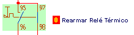
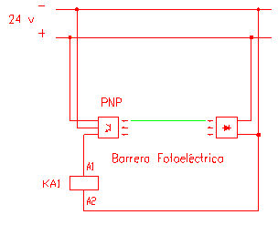
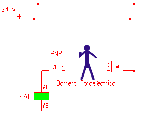
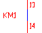
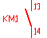
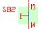

Ventana "Esquema
de mando"
Elementos de Actuación:
Rearme del relé térmico
En aquellos circuitos que se produce el disparo del relé térmico
por falta de una fase, es necesario rearmarlo en el esquema de mando. Para
ello se hace clic en el icono de color rojo, que aparece junto al símbolo,
en el momento del disparo:

Barrera fotoeléctrica
Cuando la barrera luminosa está en reposo, un rayo de color verde
parpadea entre el emisor y el receptor. Si se desplaza el cursor del ratón
sobre este rayo, aparece una figura humana que simula el paso de una persona
por la escalera. En esta situación se activa la bobina del contactor
auxiliar.
Barrera fotoeléctrica en reposo:

Barrera fotoeléctrica activa:

Elementos indicadores:
Contactos activados
Todo tipo de contactos que se encuentran activados en este esquema (auxiliares,
temporizados, etc..), se muestran en color azul y los que están en
reposo en color rojo:


Los elementos del esquema de mando, sobre los que actúa el usuario,
o la propia máquina, se representan con una sombra de color verde
cuando están activos:

.
Bobinas y lámparas
Cuando una bobina, o una lámpara, está activa (bajo tensión)
se representa rellena de color verde o amarillo.
Temporizador
Cuando un temporizador está "temporizando", un triángulo
gira dentro del símbolo en el circuito de mando.
¡IMPORTANTE!
En el itinerario EVALUACIÓN,
está desactivada la simulación de circuitos.
Por lo tanto todos los elementos de actuación e indicación
no son operativos.